태조산공원의 편의시설을 확인하세요
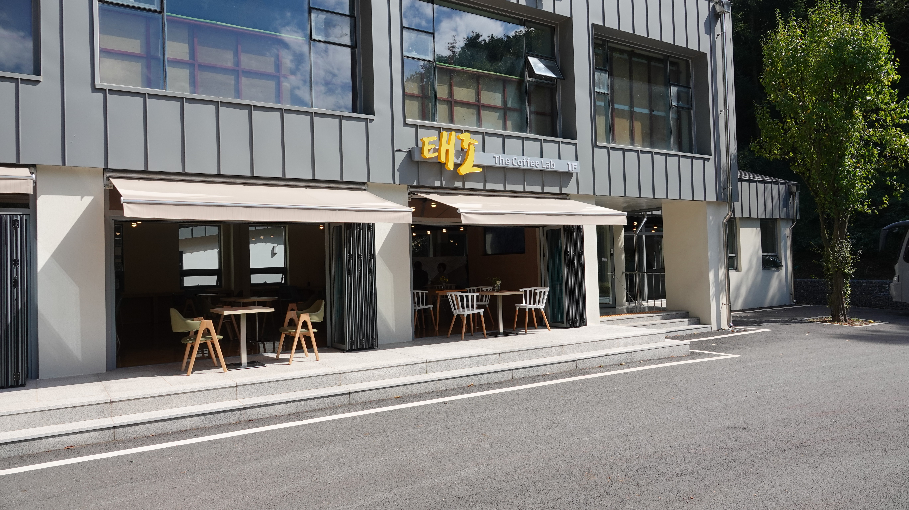
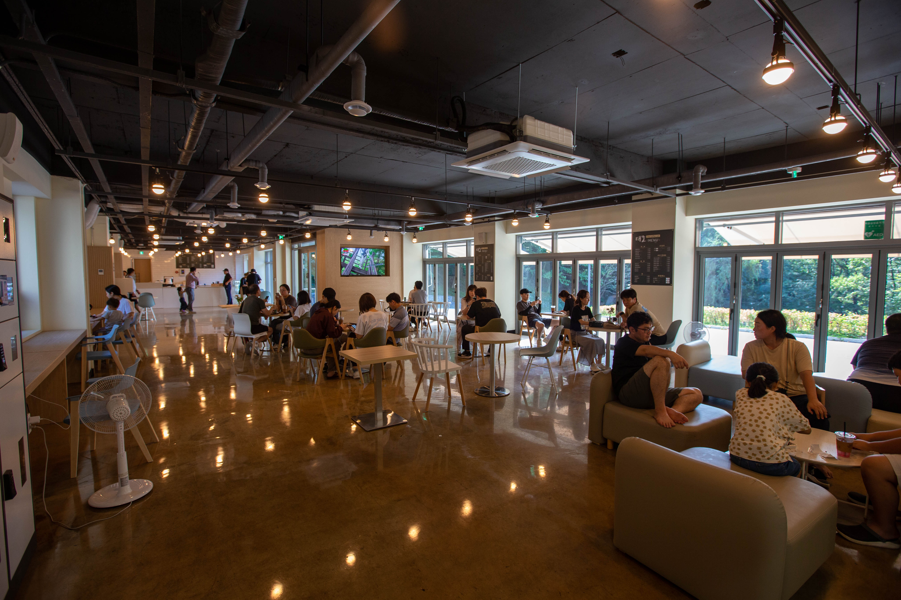
태조산공원 이용 중 잠시 쉬어가며 음료와 휴식을 즐길 수 있는 공간입니다.
사진을 좌우로 넘겨 카페의 외부와 내부 모습을 확인해보세요.
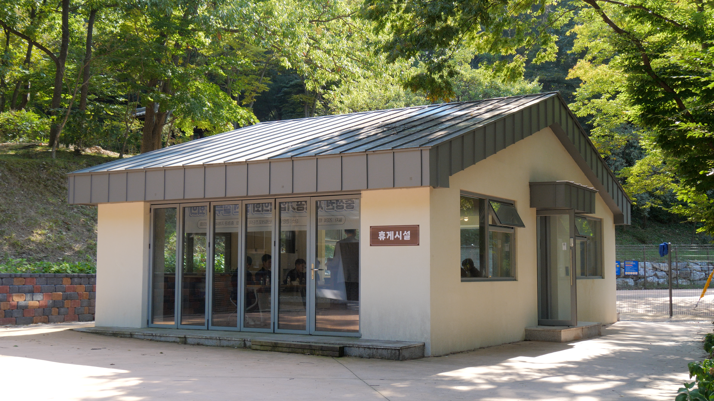
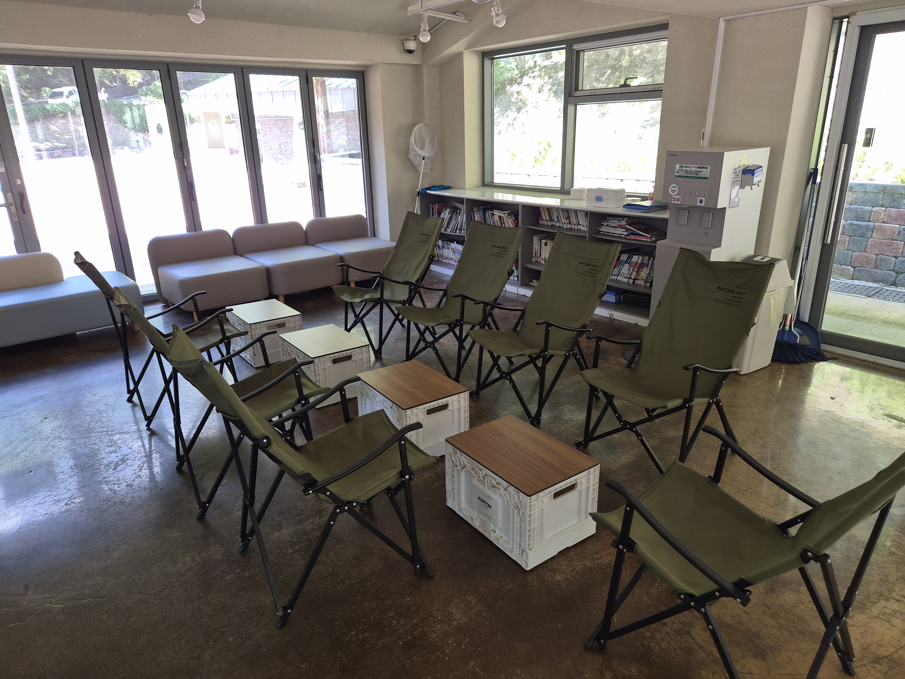
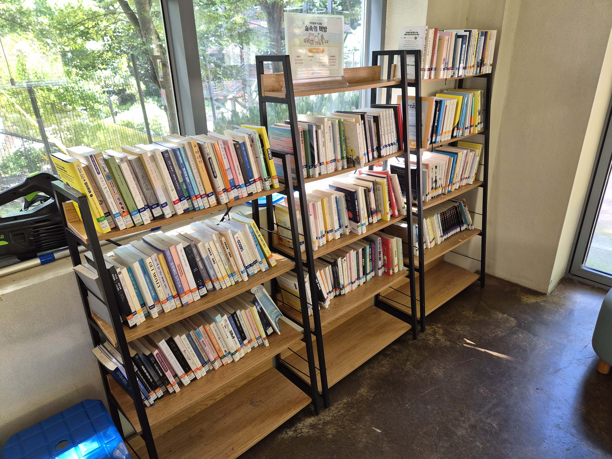
숲속에서 잠시 쉬어가며 책을 읽고 여유로운 시간을 보낼 수 있는 작은 도서관 형태의 휴식공간입니다.
사진을 좌우로 넘겨 숲속쉼터의 모습을 확인해보세요.
태조산공원 내 이용 가능한 화장실 위치를 안내합니다. 가까운 화장실을 확인하고 편리하게 이용해 주세요.
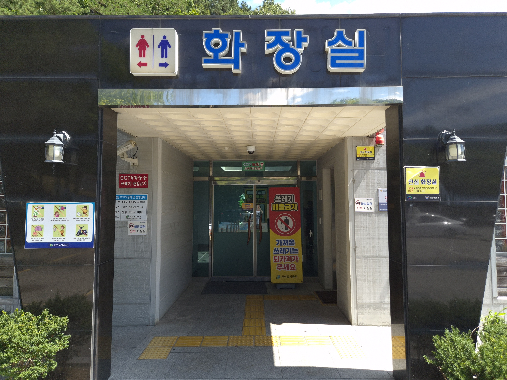
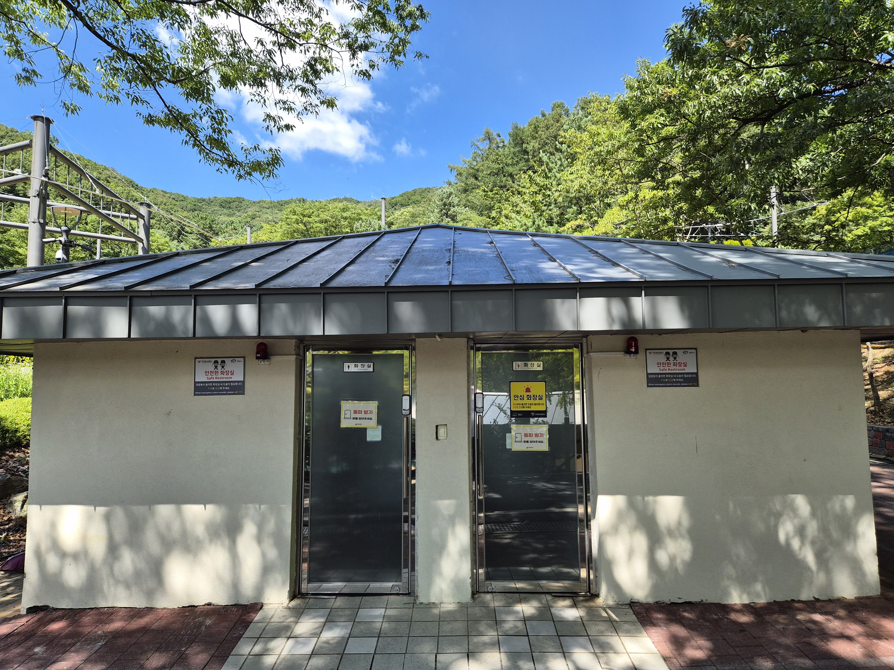
📍 제1주차장과 제2주차장 사이 올라가는 길 초입
🚶 어울림센터 기준 약 800m · 도보 12~15분
♿ 장애인화장실 있음
🔔 안심벨 설치
🕐 24시간 이용 가능
📍 초화원과 유아숲놀이터 사잇길
🚶 어울림센터 기준 약 100m · 도보 2~3분
🔔 안심벨 설치
🕐 24시간 이용 가능
📍 어울림센터 1층
♿ 장애인화장실 있음
👶 2층 기저귀교환대 이용 가능
🔔 안심벨 설치
🕐 시설 운영시간 내 이용 가능
📍 무장애나눔길 출발지 교육장
🚶 어울림센터 기준 약 600m · 도보 8~10분
🔔 안심벨 설치
🕐 시설 운영시간 내 이용 가능
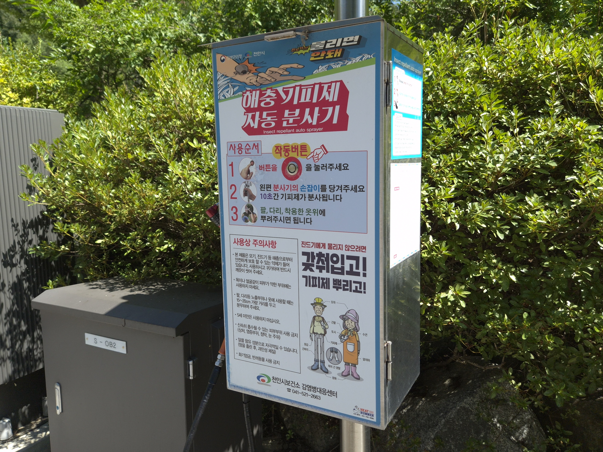
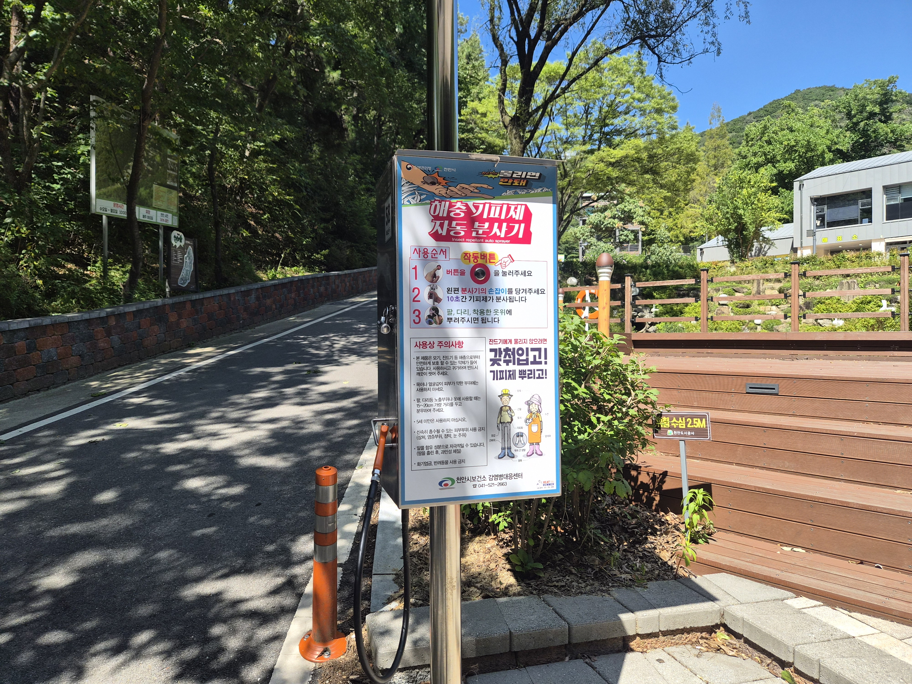
야외활동 시 이용할 수 있는 해충기피제 자동분사기입니다.
사진을 좌우로 넘겨 설치 위치를 확인해보세요.
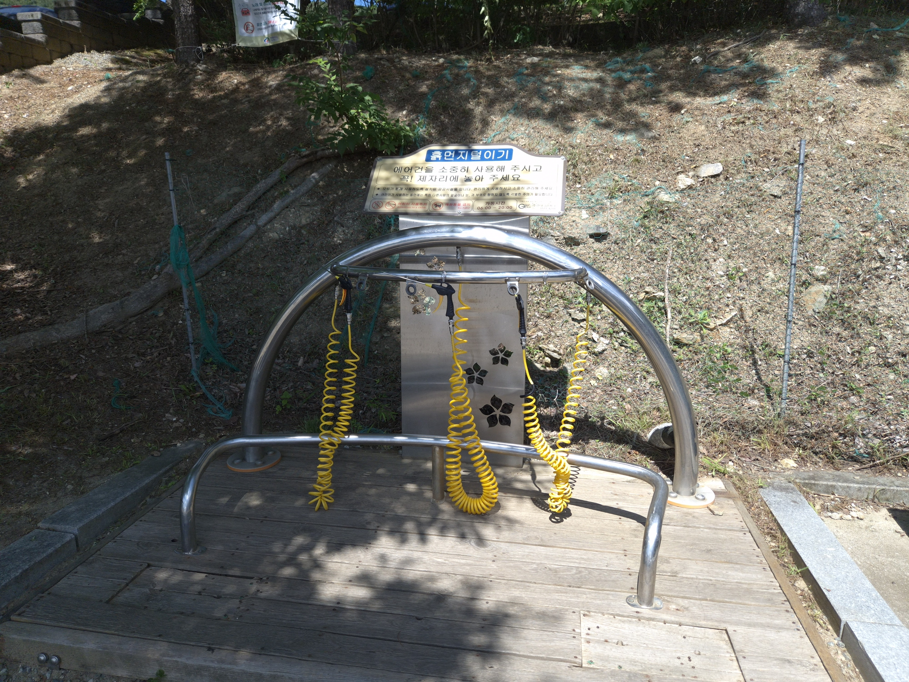
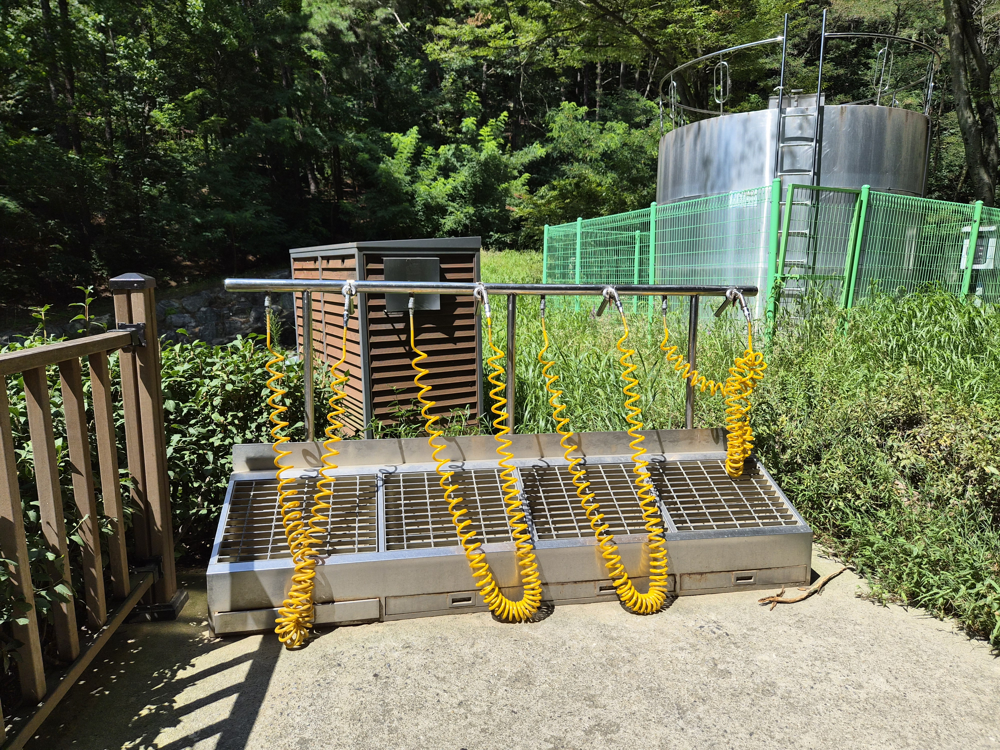
산책 및 야외활동 후 신발과 의류에 묻은 먼지를 털어낼 수 있습니다.
사진을 좌우로 넘겨 설치 위치를 확인해보세요.